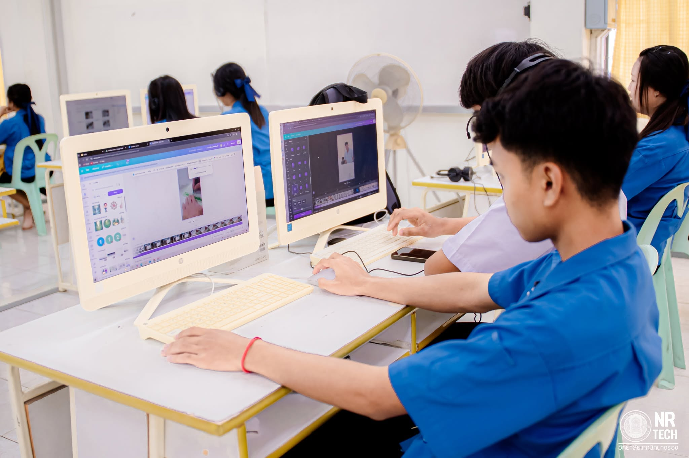
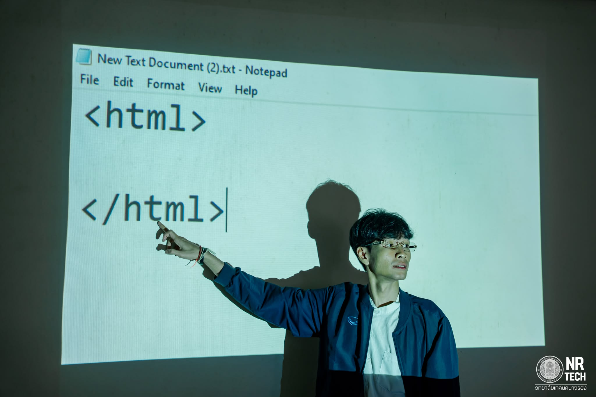
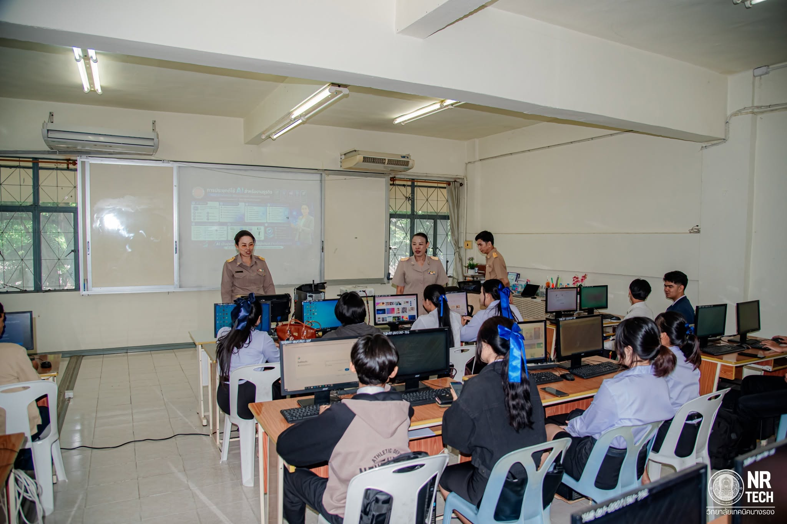

แผนกวิชาคอมพิวเตอร์ธุรกิจ / เทคโนโลยีสารสนเทศ
มุ่งเน้นการพัฒนาทักษะด้านการเขียนโปรแกรม การดูแลระบบเครือข่าย เทคโนโลยีดิจิทัล และการประยุกต์ใช้ในธุรกิจ

ระดับ ปวช./ปวส.
สาขาวิชาเทคโนโลยีธุรกิจดิจิทัล
เน้นทักษะพื้นฐานคอมพิวเตอร์ โปรแกรมสำนักงาน การแต่งภาพ การสร้างเว็บไซต์เบื้องต้น และงานธุรการดิจิทัล

ระดับ ปวช./ปวส.
สาขาวิชาเทคโนโลยีสารสนเทศ
เน้นการเขียนโปรแกรมเชิงลึก (Web/Mobile App) ระบบฐานข้อมูล เครือข่ายคอมพิวเตอร์ และความมั่นคงปลอดภัยไซเบอร์

จุดเด่นของแผนก
ห้องปฏิบัติการทันสมัย
มีห้องปฏิบัติการคอมพิวเตอร์พร้อมเครื่องสเปกสูง อินเทอร์เน็ตความเร็วสูง และอุปกรณ์เครือข่ายสำหรับฝึกปฏิบัติจริง